Project 1
Part 1 - Nametag
The first print that I worked on was the keychain, I found this to be a relatively easy print because the template was pre-made and all we had to edit was the name. This print was done on the Prusa mini using the Prusa native software for slicing. The settings used during the print were .15mm speed presets, no supports/brim, 15% infill, PLA filament, and 3.6 grams of used filament. The print went well with no problems in the workflow, simply slicing the template and uploading the files onto the USB for the printer was all that was required. The final product of the print was solid with only a little bit of accuracy lacking in the small details of the letters along with some stringing there, which I assume is because of the tiny size of the print and the speed preset used, besides this though it was a successful print.

Part 2 - Second Print/Stress Test
The second print for this project was the stress test print with the idea of the print being to push the prusa mini to its maximum capabilities where it will surely fail. For this print, I got the stl file from thang.com by typing in “stress test” and picking one that measured many different printing settings as well as having overhanging pieces. Settings used were .15mm structural presets, no supports, 15% infill, and PLA filament. The final print did ultimately fail with a lot of stringing all across rendering the details of the print non legible. My main assumption is that this is due to the size of the print, being that it is so small the printer is having a hard time making the key components of the print small as well. Although, considering the point was to make a failed print I would say that this print was successful.
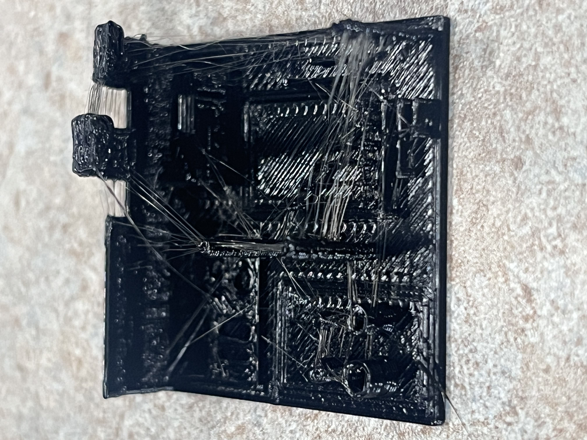
Project 2
For this project, the primary objective was to take a concept from sketch to reality by using Tinkercad and Fusion360 to edit existing publicly available.STL &.3MF files. We began by searching for a model to base our idea on thangs.com. I found my model relatively quickly which is the Eiffel Tower, being that I had a concept that resonated with me beforehand. Once I saw the model I decided to sketch a bent version of the Eiffel Tower (inspired by the Leaning Tower of Pisa) to represent the nature of capitalist economies being bent against populist interest. Once I loaded my model up in Tinkercad to start, I quickly realized that my sketch would not be able to print exactly how I imagined it; however, I used it as a starting point to continue the design. After some playing around in the TInkercad software, I came up with the idea of the Eiffel Tower being tilted on the block with the saying “da ppl” which brought me to a more interesting meaning. So while still representing the themes of capitalism as discussed before, this final version of the design represents how younger generations can overcome the negative aspects of our economies if we rise as a collective. Structurally, the design allowed for the print to be built with stable but not excessive support while also maintaining the structure of the tower during the print without collapsing which the original sketch may have done. After I finalized the design I printed the model in blue filament which you can see in the below pictures along with all CAD workflow slices in Tinkercad, PrusaSlicer, and Fusion360. The print was successful with no apparent problems and I used the settings .15mm speed, PLA filament, 15% infill, no brim, and supports everywhere, with 10.37 grams of used filament. After that print, I loaded the file into Fusion360 in which I made the model a little bit larger and uploaded it back into Prusa for another print using the same settings except with 19.58 grams of used filament. This print ended up being successful as well and it was printed with white filament. In the future, I would close the gap between the tower and the block so I do not need to rely on support to hold it. Besides that, I am very satisfied with the final results and again you can find all the pictures below.
Sketch & Tinkercad Photos/Print
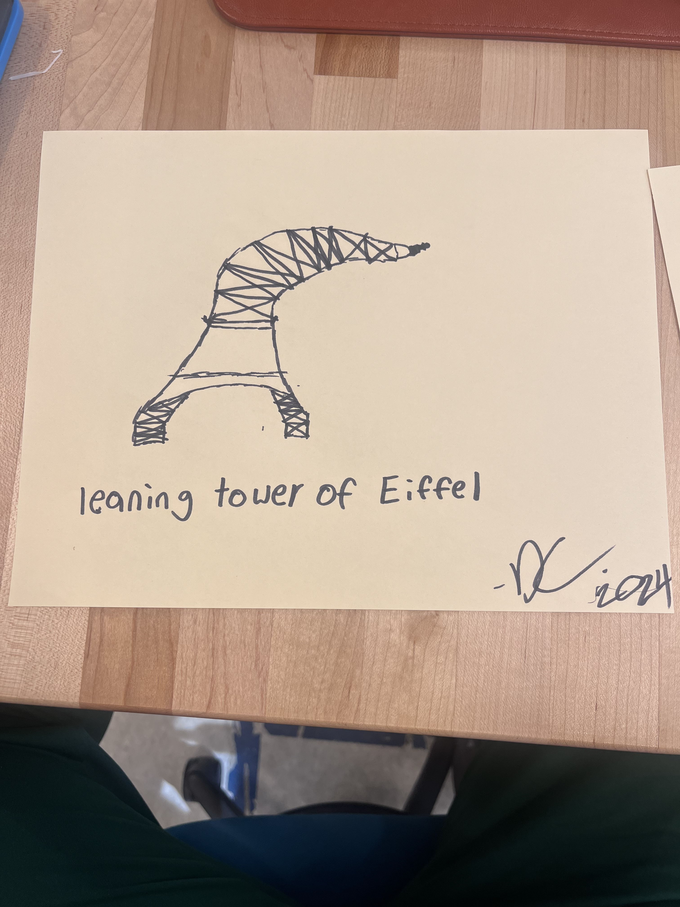 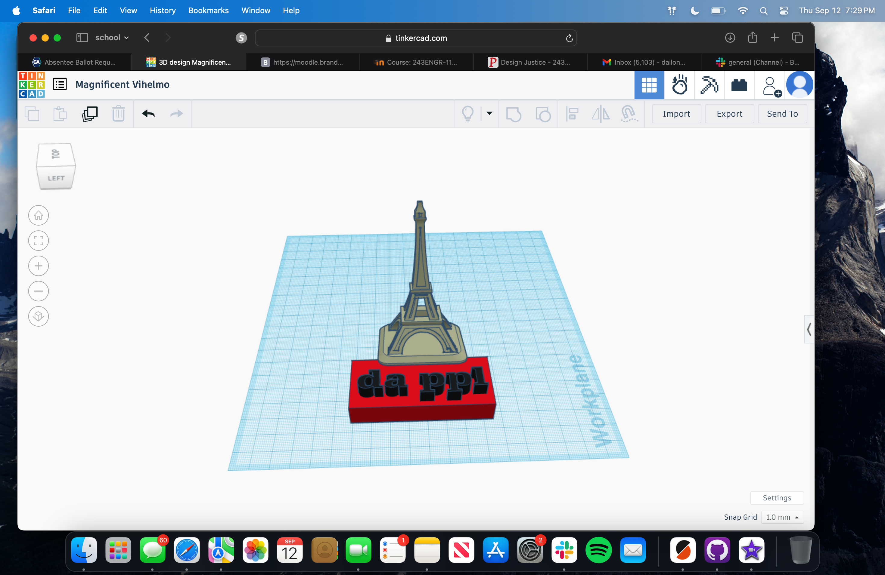 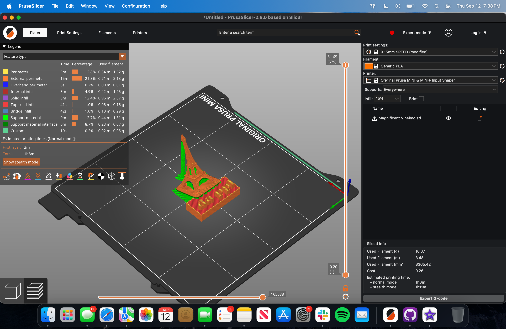 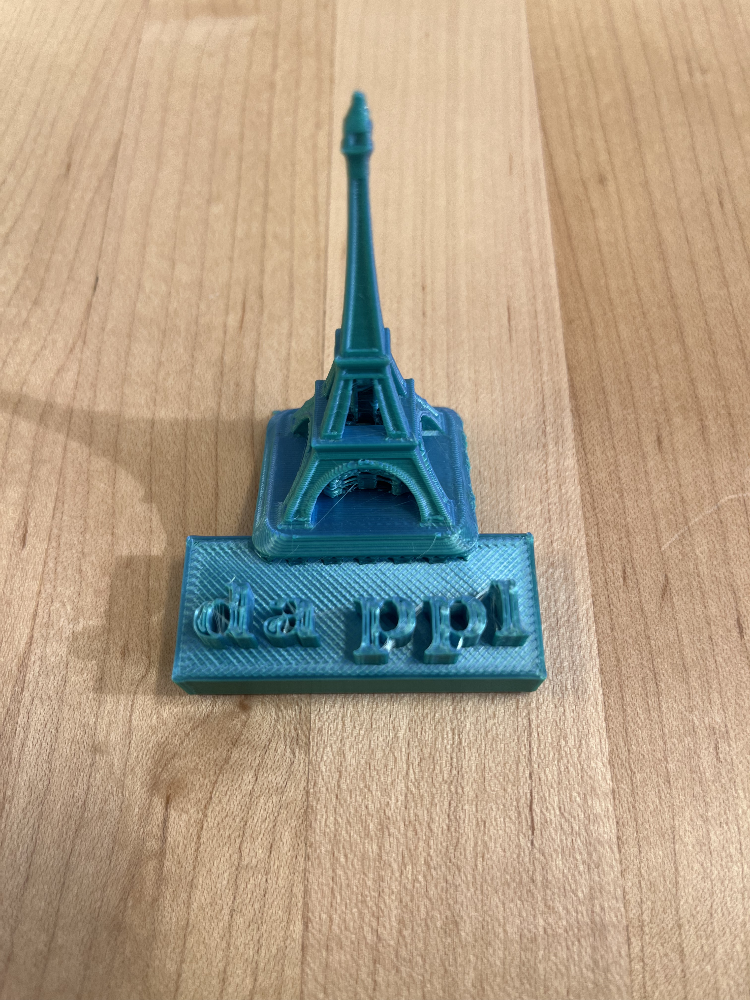 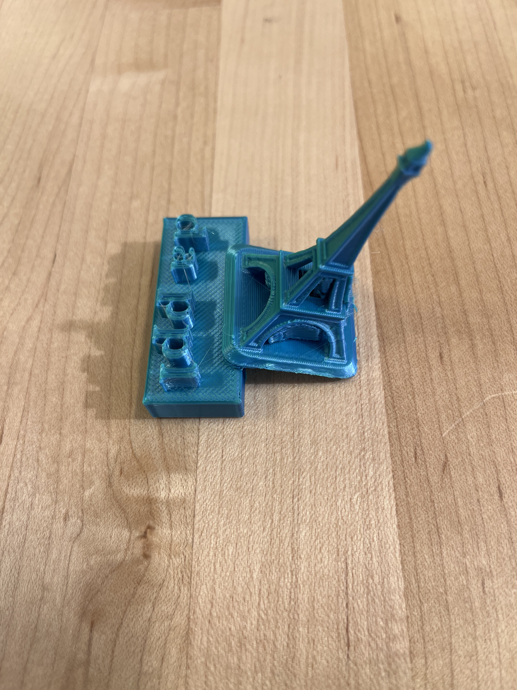
Fusion Photos/Print
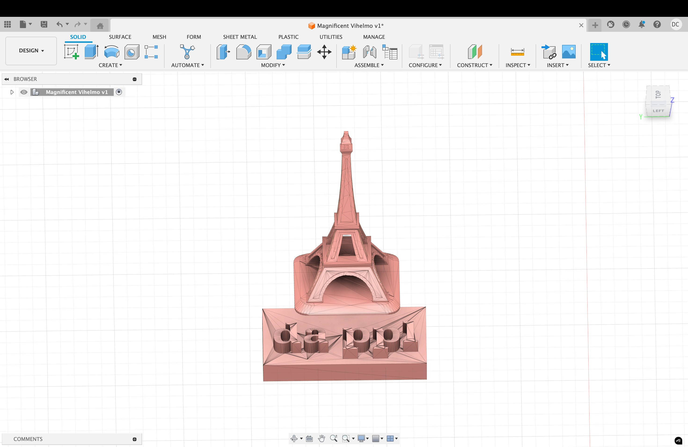
 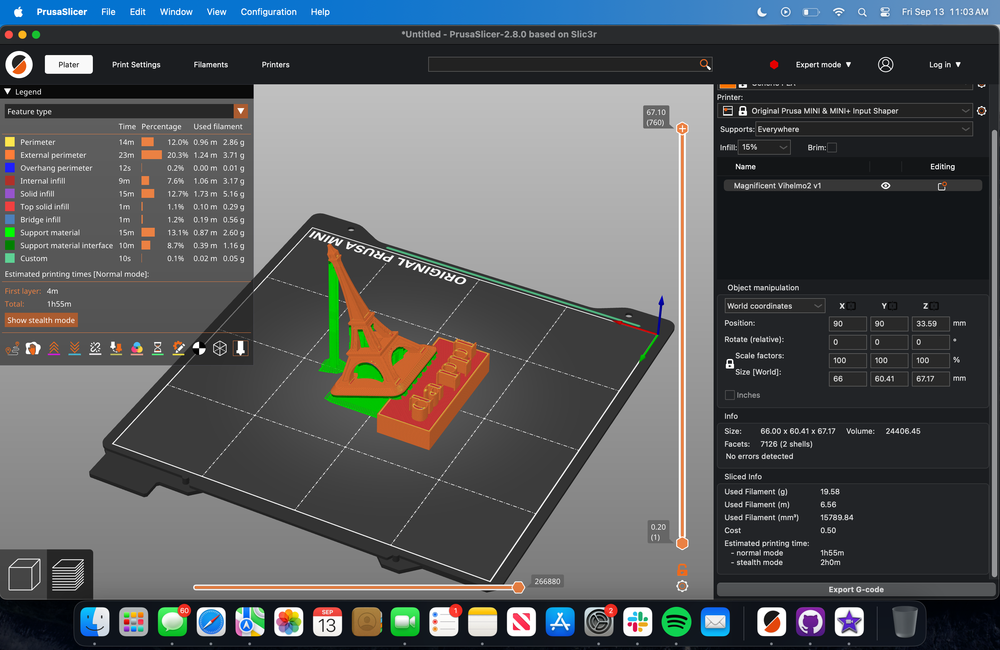
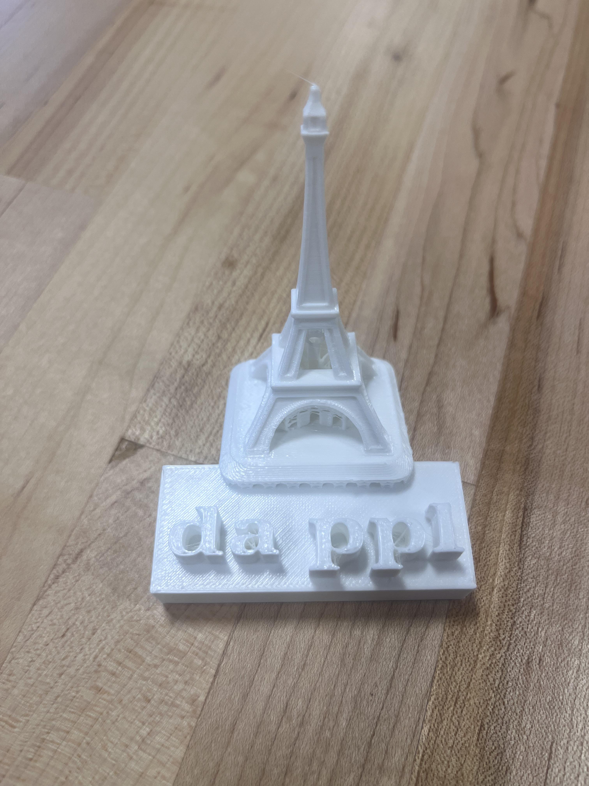
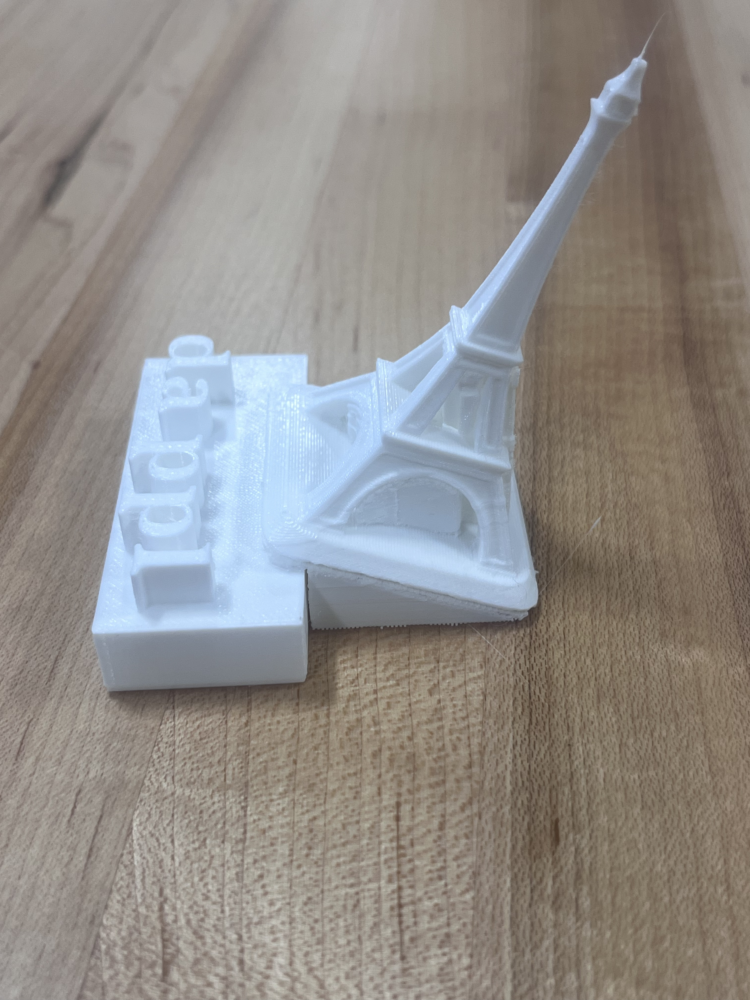
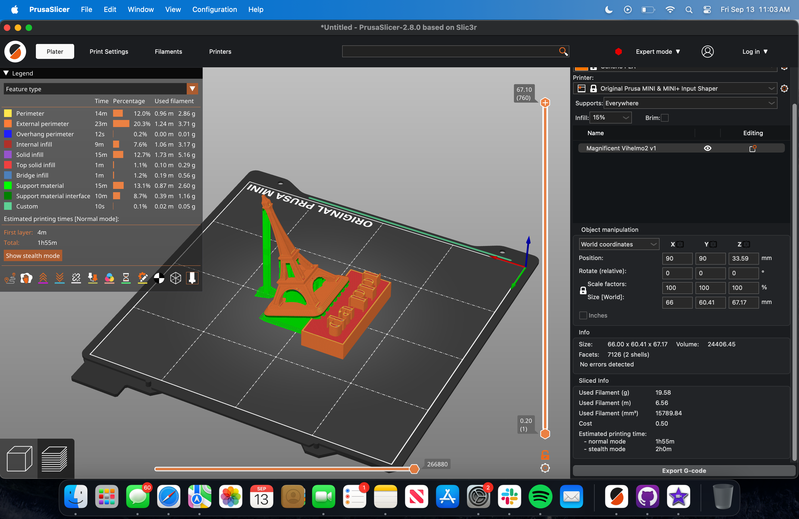
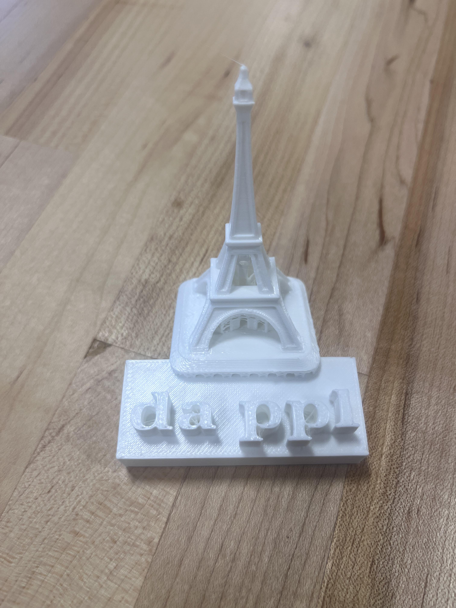
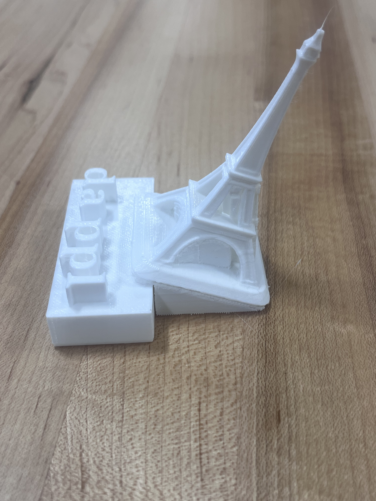
Project3
For this project the primary objective was to bring a sketch to reality for a battery pack powered alarm clock by using Fusion 360 to design multiple versions of a chassis created via laser cutting and 3d printing. We did this in addition to through hole soldering the components of the circuit board.
The project caused us to run into a few complications when creating buttons for the chassis during the 3d print however, once we decided on a simpler design our lives were made much easier. We decided to go with a design that would allow for the buttons to get easy access, in addition to the clock screen being clearly visible on through the chassis. For our prints we ran the settings; .15mm speed, 15 percent infill, with no brim or supports and the final chassis made took about an hour to print. One important note is the difference from our final green chassis design and our initial sketch from which we decided on making the hole for the buttons in the chassis later in our design process, I just think it is interesting to see that evolution happening. Below you will find all 3d print related and sketch photos.
3dprint/Sketch Photos